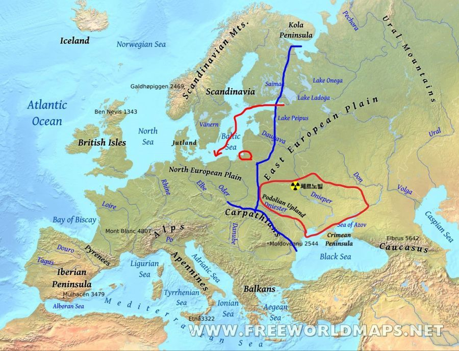

우크라이나우크라이나는 땅이 넓고 비옥해 유라시아의 대표적인 곡창지대로 꼽힌다. 하지만 동시에 강대국들의 화약고라는 숙명을 안고 있다. 유럽 열강이 동방으로 진출하는 교두보였고, 러시아엔 흑해와 지중해로 나가는 유일한 출구였다.
러시아에게 우크라이나 문제는 사활적이다. 유럽 평원은 프랑스부터 러시아까지 좁고 길게 걸쳐 있다. 자연 장애물이 없는 순수한 평원으로 여기에 걸쳐 있는 모든 나라는 서로가 서로에 노출돼 있다. 자국의 핵심부를 잠재적 침략 세력으로부터 가급적 멀리 떨어뜨려 놓아야 한다. 잠재적 적국이 공격해 올 때 1차 방어선 구실을 할 완충지대가 절대적으로 중요하다. 러시아 입장에서 우크라이나가 나토에 가입한다는 것은 완충지대가 적성지대로 바뀜을 의미한다.